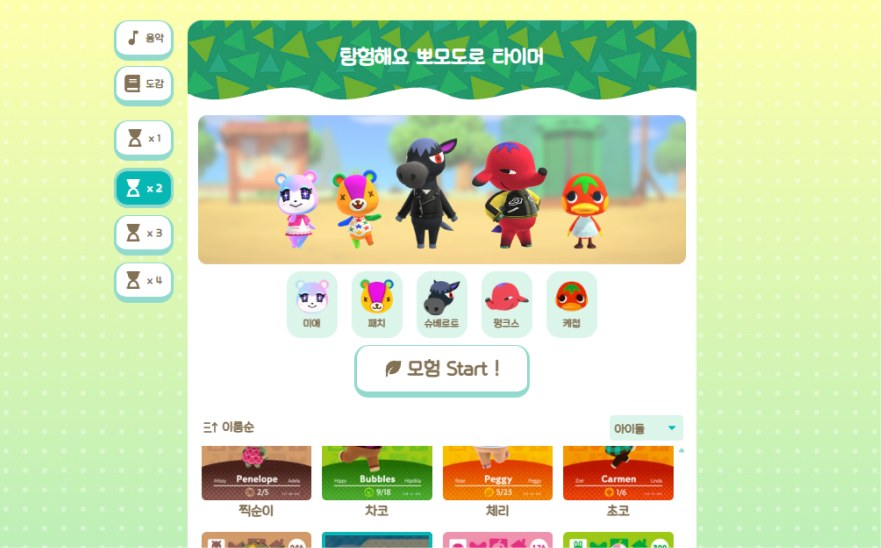
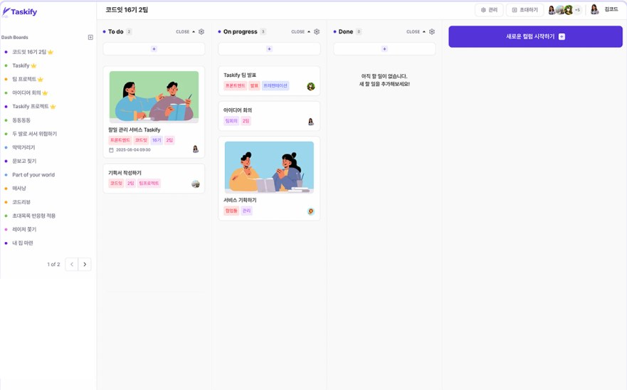
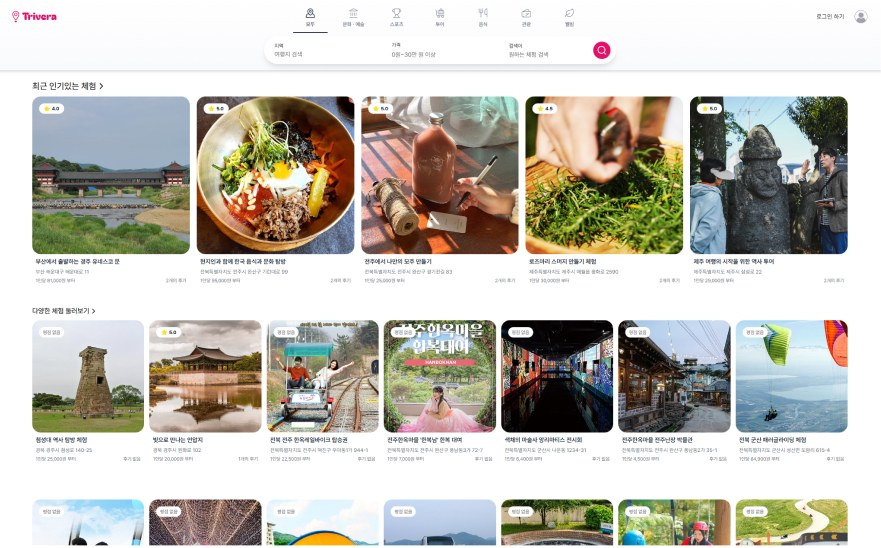

Personal · Design & Publishing
멍냥 동물병원
기획·디자인부터 퍼블리싱, 배포까지 진행한 가상 동물병원 반응형 사이트.
예약 폼 검사, 공지사항 검색·페이지네이션, 키보드 접근성을 바닐라 JS(ES 모듈)로 구현했습니다.
디자인과 퍼블리싱 초안은 AI와 협업하고, 설계 기준 수립과 검수·수정은 직접 진행했습니다.
UI Publisher · 경력 2년 5개월
금융권 SI 현장에서 쌓은 퍼블리싱 경험과
프론트엔드 개발 역량을 함께 갖춘 퍼블리셔입니다.
시맨틱 마크업, 접근성, BEM 방법론을 기반으로
유지보수하기 쉬운 UI를 만듭니다.
Skills
Publishing
시맨틱 마크업, BEM 방법론, CSS 변수, 반응형(미디어쿼리), Flexbox / Grid, 크로스브라우징
접근성
키보드 조작, 스크린리더 대응, WAI-ARIA 패턴 적용
JavaScript
바닐라 JS, DOM 조작, 이벤트 위임, jQuery → 바닐라 JS 전환
Frontend
React, Next.js, TypeScript, TanStack Query, Zustand, Tailwind CSS
Design · 협업
Figma, Git / GitHub, 웹디자인개발기능사, GTQ 1급
Career
프론트엔드 엔지니어 부트캠프
React / Next.js / TypeScript 심화 학습, 팀 프로젝트 2회 · 개인 프로젝트 1회, Git Flow 협업
㈜티소프트 사원
금융권(은행·증권·카드) SI 프로젝트 UI/UX 디자인 및 웹 퍼블리싱 전담
Publishing Works
기획부터 배포까지 직접 진행한 반응형 사이트와, 실무에서 다뤘던 금융권 관리자 화면·기존 브랜드 사이트를 시맨틱 마크업, BEM, 접근성 기준으로 다시 퍼블리싱한 작업물입니다.
Personal · Design & Publishing
기획·디자인부터 퍼블리싱, 배포까지 진행한 가상 동물병원 반응형 사이트.
예약 폼 검사, 공지사항 검색·페이지네이션, 키보드 접근성을 바닐라 JS(ES 모듈)로 구현했습니다.
디자인과 퍼블리싱 초안은 AI와 협업하고, 설계 기준 수립과 검수·수정은 직접 진행했습니다.
Financial · Admin
실무 경험을 바탕으로 가상의 은행으로 다시 구성한 금융권 관리자 시스템.
BEM 방법론과 시맨틱 마크업, 접근성 개선 작업을 진행했습니다.

Personal · Renewal
건강한 패스트푸드 브랜드 샐러디 홈페이지.
jQuery · Slick 제거 후 바닐라 JS로 전환하고 BEM, 접근성, 반응형을 개선했습니다.
Frontend Projects
프론트엔드 엔지니어 부트캠프에서 진행한 React · Next.js 프로젝트입니다.

Personal · Frontend
동물의 숲 캐릭터와 함께하는 게이미피케이션 뽀모도로 타이머.
타이머·오디오 로직을 커스텀 훅으로 분리하고, 시맨틱 마크업과 스크린리더 대응으로 Lighthouse 접근성 96점을 확보했습니다.

Team · FE 5인
일정 관리·공유 웹 애플리케이션.
대시보드 수정·내 계정 페이지와 공용 컴포넌트를 맡아, 새로고침 시 스켈레톤이 깜빡이는 하이드레이션 문제와 포탈 컬러 피커의 외부 클릭 판정 문제를 해결했습니다.

Team · FE 4인
여행 체험 검색·예약 플랫폼.
인증을 맡아 Next.js 미들웨어 기반 인증 프록시와 HttpOnly 쿠키로 토큰을 관리하고, 동시 요청 시 토큰 재발급이 한 번만 일어나도록 묶었습니다.
Contact